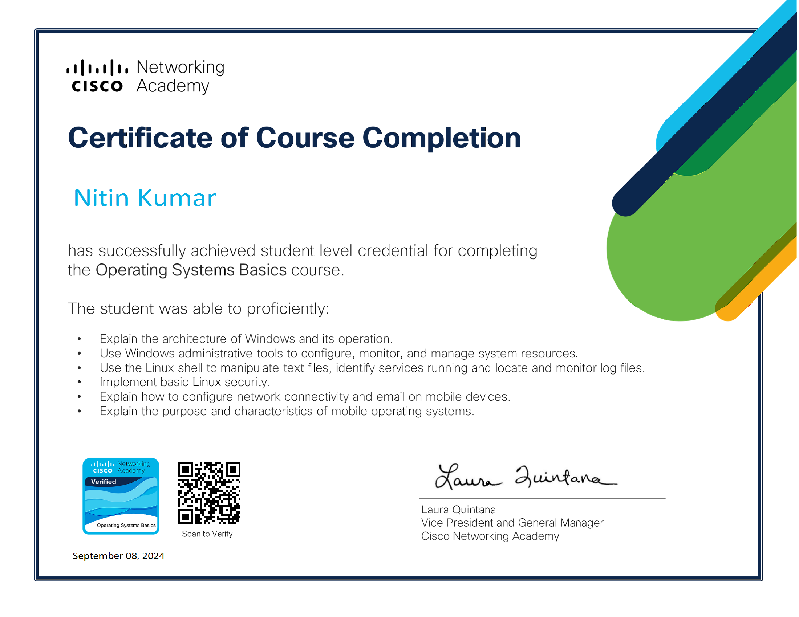
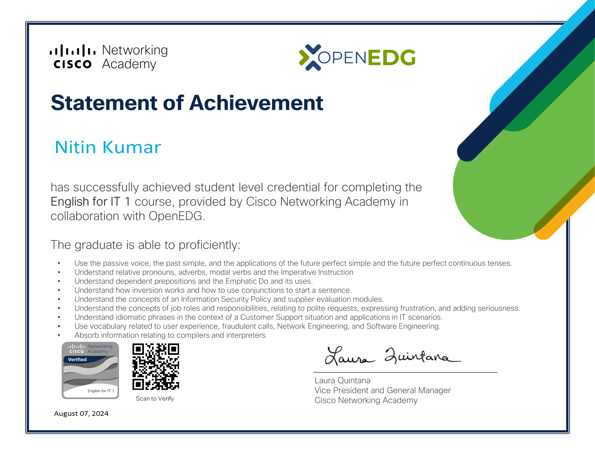

Certification
"Linux Basics introduce the core concepts of the Linux operating system, including commands, file management, and system navigation"

"The Networking Basics course on Cisco Networking Academy covers fundamental networking concepts, including IP addressing, subnetting, and network security. "
Cyber Security Foundation equips individuals with essential knowledge and skills to protect systems, data, and networks from cyber threats
Cybersecurity is the practice of protecting systems, networks, and data from digital attacks, ensuring privacy, integrity, and availability in the cyber world

Operating System Basics cover the fundamental concepts that enable a computer to manage hardware, software, and resources efficiently
Generative AI Basics explore how AI creates content, like text, images, or audio, using machine learning and neural networks

English for IT focuses on developing communication skills for understanding and discussing technology and technical concepts in the IT field